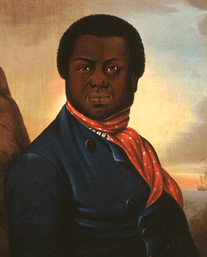
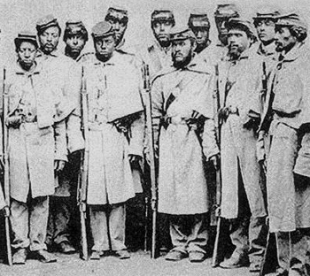

|
While the majority of African-Americans did not gain freedom from slavery
until after the Civil War, the history of free blacks in the United States has
its origins in the early years of colonial settlement. Beginning in the early
seventeenth century, a small number of slaves found opportunities for
self-purchase. Over the course of the eighteenth and nineteenth centuries, the
population of free blacks continued to grow thanks to immigration, escapes, and
manumission. As free men and women, these individuals served as soldiers and
sailors and worked as artisans, farmers, and domestic servants, among other
occupations, attaining varying degrees of economic success and social privilege
along the way.
By the 1680s, with indigenous populations in freefall as a result of disease
and other demographic catastrophes wrought by European colonization, African
slaves were imported into the colonies in ever-greater numbers each year in
order to satisfy planters' labor needs. It was not long before Africans were the
region's dominant labor force. Owners, in their efforts to ensure their slaves'
subservience and productivity, disregarded all but the most basic of human
needs. Slaves' living and working conditions were often so brutal that they
suffered staggeringly high mortality rates, thereby increasing demand for
shipments of African labor. Given the high value of slave labor, most owners
were disinclined towards the practice of manumission, which was more common in
Latin America than in the British colonies. And, given the harrowing conditions
they endured, slaves found it increasingly difficult to tend to their own plots
of land, raise animals, or earn enough money for self-purchase.
Still, thanks to their ingenuity, resilience, and plain good fortune, a
surprising number of African Americans did manage to obtain freedom. Sometimes
they simply ran away, winding their way through dangerous backwoods, lowland
swamps, and mountainous terrain in search of safety and solace. Among those who
were unwilling or unable to escape, the slaves most likely to gain freedom were
those who worked outside of the plantation system in urban settings. Urban
slaves in the northern colonies, for example, worked in a variety of skilled and
manual capacities, as tradesmen and hired out laborers, earning wages that could
be put towards self-purchase. This was not always a straightforward proposition,
however, since hired-out slaves were required by law to supply their owners with
a daily wage, and once they used the remaining portion to pay for food and
clothing, there was often very little to save.
|

Paul Cuffe was one of the wealthiest African
Americans of the antebellum era.
|
Nonetheless, the eighteenth century saw a slow but steady increase in the
number of free blacks. And by the 1780s, following the American Revolution and
subsequent Declaration of Independence, freedom came into closer view,
particularly for slaves up North. This was in large part thanks to
African-Americans' growing awareness of revolutionary rhetoric, which promoted
universal equality. This era, which historians have referred to as the "Age of
Revolution" because of the numerous independence movements taking shape around
the world, created a growing awareness of and desire for substantive change
among enslaved and free blacks. As ideas about "freedom" and "liberty" began to
circulate, thanks to the French and Haitian Revolutions as well as the war for
American independence, slaves became increasingly aware of the potential for
change. By applying the abstract language of rights and citizenship to their own
reality as slaves, they--along with a few prominent whites like Thomas
Paine--condemned slavery as antithetical to the tenets of freedom and
citizenship. As a result of these and other efforts, the states north of the
Chesapeake proposed plans for gradual emancipation, and the population of free
blacks continued to grow. By 1810, the population of free blacks in the North
numbered approximately 50,000, which was nearly double that of slaves. By 1860,
the number of free blacks in the region had jumped to more than 400,000, while
the slave population was all but non-existent.
What did freedom mean during this period? For some free blacks in the North,
it meant living in material circumstances that were disappointingly similar to
those they endured under slavery. Even though slavery was on the decline in the
region, racism was still a formidable opponent, which made it difficult for free
blacks to find good paying work. Some even found themselves indentured to white
households--sometimes even those of their former owners--in order to escape
poverty. But while the road from slavery was paved with numerous obstacles,
poverty was not a universal feature of the free black experience. For example,
some free men and women were not only able to continue working in the trades
that allowed them to escape from slavery in the first place, but they also
managed to open successful businesses, such as barber shops and catering
services.
Regardless of their economic circumstances, free blacks in the North were
reshaping the terrain of the cities in which they lived. They found ways to
nurture strong family ties, build dynamic social networks, and develop
meaningful traditions and customs that would last for centuries to come.
Northern cities like New York and Philadelphia soon became centers of black
cultural and social life, where even the poorest of free blacks found ways to
experience some of the joys of freedom. In spite of the racism and barriers they
encountered, they could count on a sizable free community for spiritual
support, practical guidance, and helping hands in times of economic need.
These men and women also influenced their cities' sartorial landscapes, as
they dressed in accordance with their newfound freedom as well as their own
aesthetic ideals. For example, African-American seamstresses frequently used
their dexterity with needles and thread as a means to outfit themselves in
stylish dress. Their costumes also marked a departure from the kind of grueling
manual labor they may have performed as slaves. Freedom, for these women,
enabled them to experiment with more stylish, albeit perhaps less practical,
attire. While even lower-status free black women could find ways to engage in
these practices, the greater a woman's social and economic means, the stronger
was her capacity to make clothing decisions that would make observers aware of
her status. In particular, church Sundays were a day for African-Americans to
break from their usual pattern of functional dress, and instead experiment with
fashionable attire. Perhaps under her head cloth, a field worker might have
curlers in her hair in anticipation of Sunday, when she would wear her most
stylish clothing and hairstyle to church. Moreover, church attire also signaled
their attachment to the African cultural forms, with which they infused their
religious beliefs.
White observers frequently viewed these practices as threats to established
racial hierarchies. In Philadelphia--which by the 1830s was home to one of the
wealthiest free black populations in the North--black men and women owned
businesses, places of worship, schools, and other institutions that paralleled
and sometimes even outperformed those of their white counterparts. As a result,
free blacks were heavily ridiculed in cartoonist E.W. Clay's wildly popular
"Life in Philadelphia" series, which frequently depicted them as highly stylized
caricatures and buffoons. In their efforts to reduce the city's African-American
populations to jokes, Clay's images offer profound insight into northern whites'
anxieties about the success attained by free blacks in the north.
The story of black freedom in the American South takes on different contours
and dimensions. Unlike their northern counterparts, slaveholders in the southern
plantation zones were--with only a few exceptions--vehemently opposed to enacting
gradual emancipation. The cost of losing such a valuable labor pool was simply
too high to fathom a reality other than the expansion of slavery. By 1790,
according to one estimate, free blacks constituted only two percent of the total
free population in Virginia, Maryland, and North Carolina.
While small, their numbers were sizable enough to make whites uncomfortable.
These free populations encountered numerous obstacles to securing stable
livelihoods. Their lives were governed by curfews and other restrictive laws
that allowed whites to monitor their movements, such as the 1793 provision that
required Virginia's free blacks to register with the county clerk. Proof of
registration served as a de facto proof of freedom, and employers were required
to verify these freedom papers before they could hire any black workers. Failure
to register, then, could seriously jeopardize the few employment prospects
available to free blacks. Even when they did register, planters were loath to
hire free blacks to work alongside their own chattel, fearing that such close
proximity to freedom might incite rebellion among slaves.
In addition to the economic imperatives of registering for freedom papers,
free blacks were keen to keep a record of their legal status within easy reach.
Given the fact that the South's slave population far outnumbered its free black
population, freedom papers were crucial to proving one's legal status in order
to avoid arrest or re-enslavement. Indeed, the possibility of incarceration, a
return to slavery, and physical violence at the hands of whites was cause for
daily concern among free blacks in the South. Whites in Virginia frequently and
openly boasted of the measures they took to drive their free black neighbors as
far away as possible. Even state officials, like General William H. Broadnax,
advocated such menacing ideas as approaching a free black neighbor with, "the
gentle admonition of a severe flagellation, so that he will go away." Where
those men, women, and children could go was an open question, since they were
likely to encounter similar resistance to their presence in neighborhoods,
towns, and counties throughout the region.
|

A number of wealthy African Americans in New Orleans
joined the Confederate army at the outbreak of the Civil War. They
ultimately became disillusioned, however, and switched sides.
|
These economic limitations, alongside the pervasive threats to their physical
well-being, and the constant denial of their citizenship rights, has led
historians to refer to these men and women as "slaves without masters." Despite
this, the South's free blacks did much to prevail in the face of brutal
circumstances. In cities like Charleston and New Orleans, they purchased land,
received loans, and built businesses. Indeed, New Orleans holds a unique place
in the history of free blacks in the Americans South. Scholars have long noted
the early emergence of mulattoes and free people of color in Louisiana. The
state's history of French and Spanish also opened up routes to freedom not
accessible to slaves elsewhere in North America. For instance, the Louisiana
Code Noir of 1724, which established the legal framework for slavery in
the region, established multiple routes to freedom, including manumission and
self-purchase. Moreover, the dearth of white women in early Louisiana history
gave rise to a remarkable number of interracial unions, with the children of
such couplings often receiving freedom.
Consequently, the region had a comparatively large free black population--a
group generally referred to as "free people of color," a designation that
acknowledged their mixed racial ancestry. French colonial officials in the early
eighteenth century encouraged free people of color to distance themselves from
slaves, allowing them economic mobility, opportunities for military
conscription, and even employment as slave catchers and punishers. They also
enacted legislation to prohibit marriages between slaves and free people of
color. At the same time, however, they put significant effort into reminding
free people of color that they were not, in fact, white. Indeed, free people of
color in Louisiana were subject to strict codes of conduct as well as the threat
of re-enslavement for minimal offenses. This was especially true in the
aftermath of the Haitian Revolution, when refugees from St. Domingue arrived in
Louisiana. By 1803, free people of color constituted nearly 15% of the total New
Orleans population. They worked in skilled crafts as sail makers, commercial
arenas as cigar manufacturers, educational fields as math teachers, and
sometimes even owned slaves of their own.
Once under American control--beginning in 1803--Louisiana lost some of the
characteristics that set it apart from the rest of North America, with officials
attempting to wrest from free people of color the few citizenship rights they
had managed to attain under French and Spanish rule. However, despite the brutal
climate of the nineteenth century, slaves and free people of color in Louisiana
were not so willing to bend to whites' will. By the 1860s, they would be joined
in their resistance to white oppression by slaves and free blacks throughout
North America, as the possibility of complete abolition became increasingly
possible. Together with white activists and abolitionists, they inched closer
and closer to bringing an end to the centuries of slavery that had defined
nearly every aspect of American life since its founding.
Source: Christopher Bates, ed. The Encyclopedia of the Early
Republic and Antebellum America (Armonk, NY: M.E. Sharpe, 2010), 376-381.
|